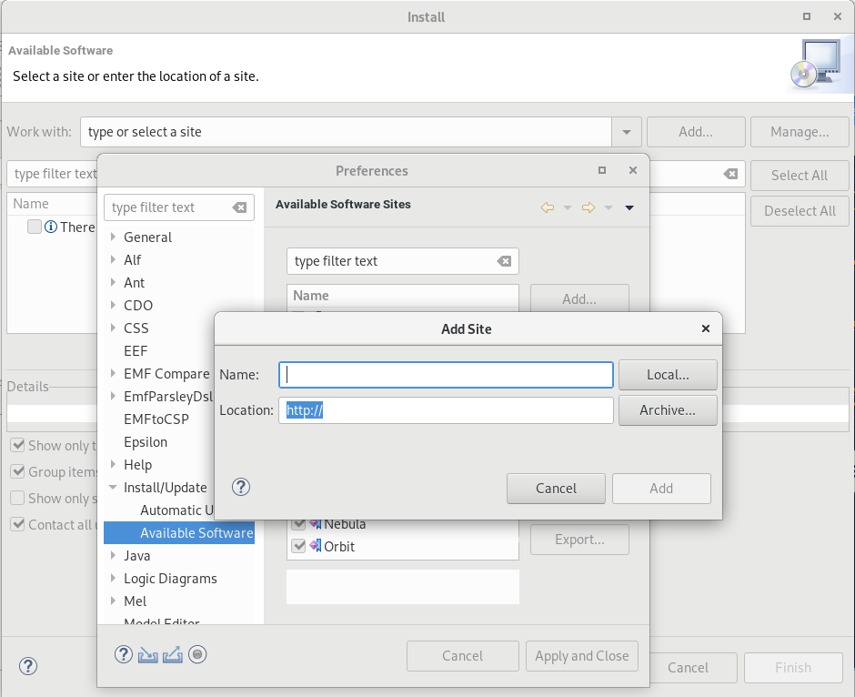
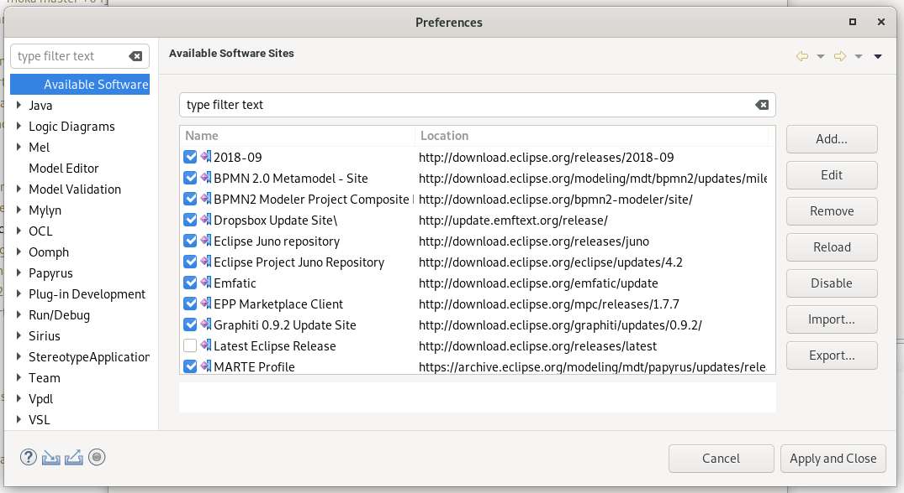
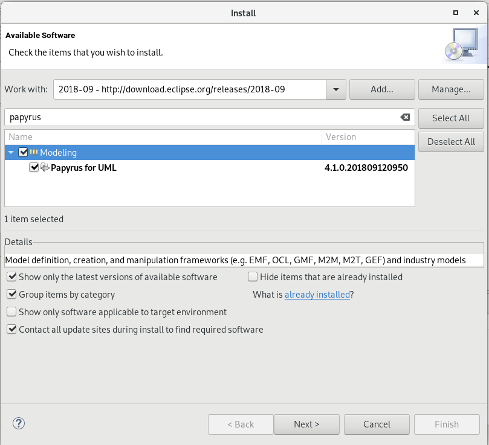
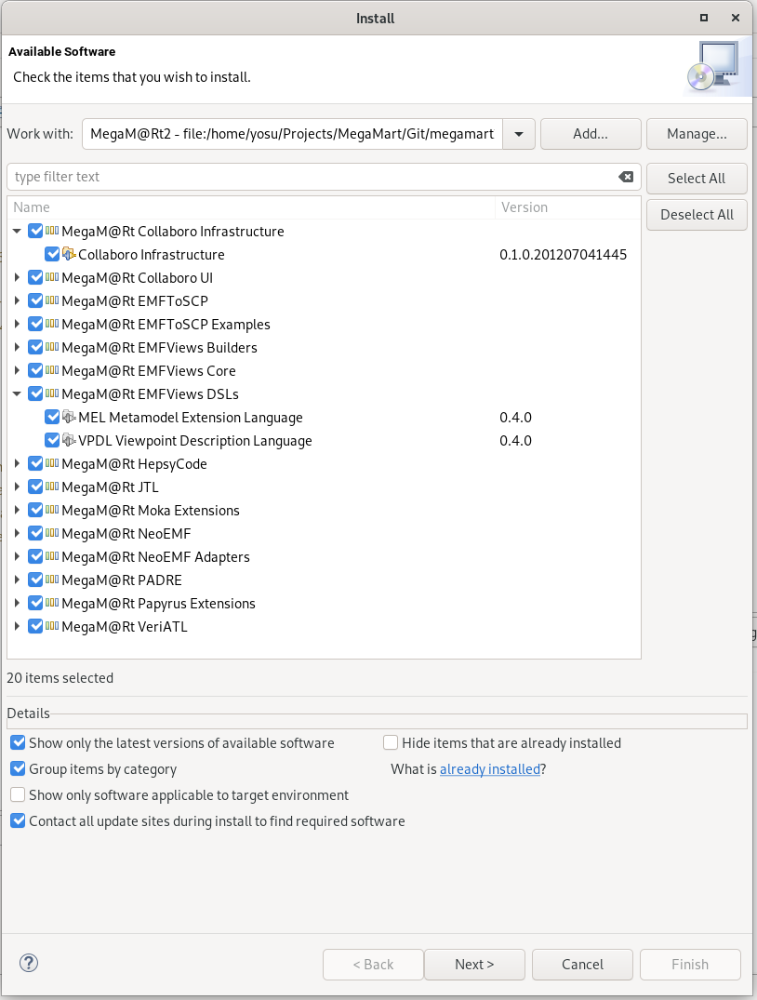
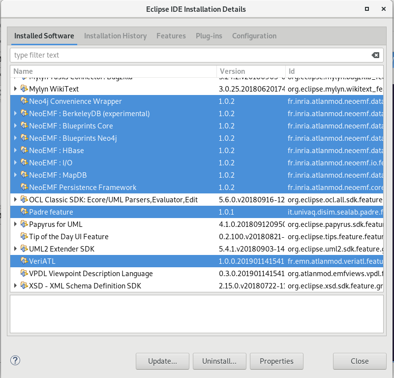

Getting started with MegaM@RT update site
Step 1: Use an existing instance of Eclipse Modeling 2018-09 or download/unzip it from:
https://www.eclipse.org/downloads/packages/release/2018-09/r
Step 2: Register the following software sites in the Eclipse IDE:
These sites are required to install third party dependencies of the MegaM@RT Eclipse IDE.
Register the MegaM@Rt Eclipse IDE site:
MegaM@Rt: https://github.com/megamart2/integration/raw/master/eu.megamart2.platform.site
To register each of these software sites, proceed as follows (see Figure 1):
- Go to the Eclipse main menu Help/Install New Software
- On the Install wizard, click on the Manage... button
- For each site on above list:
- On the Preference wizard, click on the Add... button
- Enter the site name and location (the URL listed above for each site)

Figure 1 Registering a software site
Once this process is completed, the lists of available software sites should look like shown in Figure 2.

Figure 2 MegaM@Rt Software Sites
Step 3: Install the following dependencies:
- Papyrus for UML 4.1.0, using the 2018-09 software site
- Acceleo 3.7.5, using the 2018-09 software site
- Moka 4.0.0, using the Moka software site
- Epsilon features, using Epsilon software site:
- Epsilon Core
- Epsilon Core Development Tools
- Epsilon Development Tools for EMF
- Epsilon Development Tools for UML
- Epsilon GraphML Integration
- Epsilon UML Integration
- Epsilon Validation Language EMF Integration
- Epsilon Wizard Language EMF Integration
- Epsilon Wizard Language GMF Integration
- Emfactic 0.8.0, using Emfactic software site
- ATL SDK 4.0.0, using the 2018-09 software site
- EMFText SDK 1.4.1 from the Eclipse Marketplace
- Papyrus MARTE 1.2.0, using the MARTE software site
Step 4: Install MegaM@Rt tools, using the MegaM@Rt software site. You can install individual tools or the complete set, on demand (see Figure 4).
In other to install the dependencies and the MegaM@Rt tools, follow the following procedure:
- Go to the Eclipse main menu Help/Install New Software
- In the Work with combo box, select the target software site. Wait for it to be loaded
- In case of Papyrus installation, search for it in the type filter text (see Figure 3)
- Select the software to install (see Figure 4)
- Check the checkbox: Contact all update sites during install to find required software
- Proceed through the following wizard pages accepting when prompted.
- Restart Eclipse after each software tool is installed.
- After restart, check that the tool has been installed (see Figure 5)
- Go to the main menu Help/About Eclipse IDE
- In this wizard, click on Installation details
- Find the tool in the list of Installed Software tab

Figure 3 Installing Papyrus

Figure 4 Installing MegaM@Rt tools

Figure 5 MegaM@Rt tools installed in Eclipse IDE